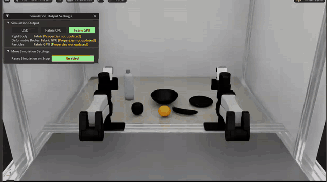

Run Dream-1
in Isaac Lab. Test it.
A local launcher page that starts Dream Labs' Dream-1 on simulated robot arms, and checks that your Dream API key and models work.

Overview
Dream-1 is a hosted model: your simulator sends it camera frames and an instruction, and it answers with arm joint targets. dreamlabs-isaaclab connects that API to Isaac Lab scenes and gives you one page to choose the robot and the model, set the key, start a run, and test the connection.
| You get | What it is |
|---|---|
| Launcher page | Local web page (127.0.0.1 only): pick a robot, a model and an instruction; Launch and Stop; see progress and results; save and check your key; test the API. |
| Sim clients | Dream-1 driving the bimanual reBot B601 and YAMLab's YAM in Isaac Lab, in Dream's own apple-into-the-bowl scene. |
| API test | Key check, model list and one real request, from the page or python -m dreamlabs_isaaclab.api_check. |
| Dataset tools | LeRobot v3 → v2.1 converter and validator for fine-tuning data (nothing is uploaded by them). |
An independent project, not affiliated with Dream Labs. It needs your own Dream account and API key, and an NVIDIA GPU machine with Isaac Sim 6 and Isaac Lab 3.
1Install
Requirements
| Needed | For | Notes |
|---|---|---|
| Linux with an NVIDIA RTX GPU | Isaac Sim | Driver 580.95.05 or newer (the course page lists tested versions). |
Isaac Sim 6 + Isaac Lab 3 in a conda env (default env_yamlab6) | the simulators | Installed as in the course, Module 0. The install script only checks this; it does not install it. |
| Python 3.10+ | the launcher page | The page itself uses only the standard library. |
| uv or Python 3.11–3.13 | the Dream environment | Dream's library needs 3.11–3.13 and pins numpy/jax, so it lives in its own env, ~/dream-env. |
| A Dream account and API key | every run | See step 2. |
YAMLab on Isaac Sim 6 (~/yamlab6) | YAM robots only | Optional. The script adds the apple-in-the-bowl task to it. |
| rebot-duo-course | reBot robots only | Optional. Its rebot-sim-pipeline has the reBot apple task. |
One command
# clone, then let the script install what is missing and open the launcher
git clone https://github.com/kabilankb/dreamlabs-isaaclab
cd dreamlabs-isaaclab
./launch.shlaunch.sh checks each step first, so it is safe to run again:
- Isaac Sim's Python. Required. If it is missing the script stops and installs nothing.
- The Dream environment. Creates
~/dream-envwith uv and installsdreamlabs,pyarrowandav. - Your API key. Only checks that one is saved. You add it in step 2.
- Dream's MuJoCo-scene assets. Converts the apple, bowl, banana, orange, bottle and plate to USD in
~/.dreamlabs-isaaclab/assets. - The YAMLab task. Adds
PutAppleInBowl-v0to~/yamlab6(three new files and two registrations; nothing else is edited). - The reBot task. Looks for your
rebot-duo-coursecheckout (optional). - The launcher page. Starts it and prints its address.
./launch.sh --check # report only; changes nothing (exit 1 if not ready) ./launch.sh --install-only # install, don't start the page ./launch.sh --no-browser # print the address instead of opening it ./launch.sh --port 9000 # another port (the next free one if taken)
It never pipes a downloaded script into a shell and never prints or passes on your API key. Override locations with DREAMLABS_ISAAC_PYTHON, DREAMLABS_DREAM_ENV, DREAMLABS_YAMLAB, DREAMLABS_ASSETS_DIR and DREAMLABS_COURSE_REPO.
By hand
# 1. the Dream environment (Python 3.11 to 3.13) uv venv --seed --python 3.12 ~/dream-env && . ~/dream-env/bin/activate pip install --upgrade dreamlabs pyarrow av # 2. the package into the Isaac environment (numpy and Pillow only) conda activate env_yamlab6 && pip install -e . # 3. Dream's MuJoCo-scene assets, then a physics check of them python -m dreamlabs_isaaclab.mujoco_scene_assets python -m dreamlabs_isaaclab.verify_assets --headless # 4. the YAMLab task (YAM robots) yamlab6-task/apply.sh ~/yamlab6
2Set up your Dream API key
Every run calls Dream's hosted model, so it needs your Dream API key. Create one in your account at platform.dreamlabs.ai/api-keys. It looks like dl_live_….
Option A · on the launcher page (easiest)
- Start the page (step 3) and go to API & model.
- Paste the key in Replace or add a key and press Verify & save.
- The page asks Dream whether the key is accepted. Only if it is, it writes
~/.dreamlabs/credentials(mode 600) and keeps a.bakof the old file. The key is never shown again: you will see onlydl_live_…and its last four characters.
Option B · Dream's own setup script
Dream's Set up API page (step 2 there) gives a script that asks for your key without echoing it, checks it, and writes the same file. Run it in your own terminal.
Option C · by hand
Create an empty file only you can read, then open it in an editor, so the key never appears on a command line or in your shell history:
mkdir -p ~/.dreamlabs && chmod 700 ~/.dreamlabs install -m 600 /dev/null ~/.dreamlabs/credentials # an empty file, mode 600 $EDITOR ~/.dreamlabs/credentials # paste the four lines below
DREAM_GATEWAY_URL=https://api.dreamlabs.ai DREAM_API_URL=https://platform.dreamlabs.ai DREAM_DATA_URL=https://data.dreamlabs.ai DREAM_API_KEY=dl_live_paste_your_key_here
~/.dreamlabs/credentials; this tool never puts it in a command line, an environment variable, a log, or a file in this repository. If it ever leaks, revoke it at platform.dreamlabs.ai/api-keys and save a new one.Model calls, including every simulator run, use your account's credits. On the page, Send a test request is labelled as the one test that does.
3Launch the page
./launch.sh # install what is missing, then start the page # or, if everything is installed already: python -m dreamlabs_isaaclab.launcher # or: dreamlabs-launcher
It prints an address and opens it in your browser:
Launcher: http://127.0.0.1:8765/?token=…
Keep this address private: it can start the simulators on this machine. Ctrl-C to stop.127.0.0.1 only, and every request must carry the random token in that address. If you lose it, stop the launcher and start it again for a new one.Using the page
- Robot. Pick a card. A card says Not ready and names what is missing if this machine can't run it.
- API & model. Check that your key is saved and accepted, test the connection (step 5), and choose a model: the public Dream-1 models and any fine-tune on your account, or type a model id.
- Run. Write the instruction (example chips help), choose episodes, a first layout seed, window or headless. Show the command prints exactly what will run.
- Launch. Starts Isaac Lab (or MuJoCo) with Dream-1 driving the arms. Output shows progress and a results table; Stop ends the simulator and its bridge together.
Each run keeps its command, full log, results.json and (for the reBot) a video in ~/.dreamlabs-isaaclab/runs/<time>-<robot>/. Only one run goes at a time, because two simulators on one key replace each other's sessions.
4How the API calls work
Dream-1 is called in a loop. Your simulator keeps feeding the Dream client what the cameras see, and about once every second and a half it asks for the next chunk: 48 steps of joint targets for both arms, which the simulator then plays out while it prepares the next request. This package runs that loop for you; here is what happens in it.
Step by step
- Open a session, once (
policy). The bridge opens the model you chose. Nothing is sent yet. - Hand over what the robot sees (
set_observation). Every 0.2 s of simulated time the scene gives the client one tick: a JPEG per camera, the joint angles and grippers, and your instruction. The client keeps the last 9 frames per camera and only the newest state. This costs nothing: no network. - Ask for the next chunk (
get_action). About once per chunk the client sends that window to Dream over HTTPS with your key. The simulator pauses for the answer. - Get 48 steps back. For each arm: 48 rows of 7 numbers, six joint angles in radians and a gripper from 0 (closed) to 1 (open), meant to be played at 20 rows per second.
- Play them. The simulator plays the first 30 rows against its own clock (30 steps per second in these scenes, so each row is held a little longer), converts the gripper to the robot's units, and when they run out it asks again.
- Reset between episodes (
reset_episode). It ends the session on Dream's side and clears the frame window.
The same loop in code
# what bridge.py does for the simulator (the Dream environment, ~/dream-env) import dream client = dream.DreamClient() # reads ~/.dreamlabs/credentials client.policy({"checkpoint": "dreamlabs/dream-1-beta", "strict": False, "action_hz": 20}) # ① on every camera tick: a base64 JPEG per camera, the robot's state, the prompt client.set_observation(frames, observation, timestamp=sim_time) # ② once per chunk; ③ the answer chunk = client.get_action() left, right = chunk["q_l_chunk"], chunk["q_r_chunk"] # 48 x 7 each # ④ the simulator plays rows 0..29 of each, then asks again client.reset_episode() # between episodes
Why a bridge?
Dream's library pins numpy and jax versions that would break Isaac Sim's Python, so the two run as separate programs. The simulator starts bridge.py in ~/dream-env and talks to it with one JSON line per request over a pipe (no server, no open port). Your key is read by the library inside that process only.
Timing you can expect
| What | Typical | Seen in this project's runs |
|---|---|---|
| First request of a run | a few seconds | 2.3 to 4.7 s (Dream starts the model) |
| Later requests | about half a second | mean 0.68 s over 64 calls (0.43 s fastest, 2.7 s slowest) |
| One chunk played | 1.5 s of simulated time | 30 rows at 20 Hz = 45 steps at 30 Hz |
| Camera ticks kept | 9 frames, 0.2 s apart | the library's defaults |
This is Dream's own loop, described for this setup. Dream's documentation (platform.dreamlabs.ai) describes the same calls for your own robot.
5Test the Dream API
Work up this ladder. Each rung proves one more thing, and the first three cost nothing.
| # | Test | Where | Proves | Cost |
|---|---|---|---|---|
| 1 | Check key | page · API & model | The saved key is accepted by Dream (a request to Dream's key check). | free |
| 2 | Test connection | page · api_check | Your Dream environment works and Dream lists your models. | free |
| 3 | Send a test request | page · api_check --call-model | The model answers a real request: 48 rows of 7 joint values, with its latency. | credits |
| 4 | Dream's own sim | page · YAM · Dream's MuJoCo sim | The whole loop works in the simulator Dream built the model for. | credits |
| 5 | Your Isaac Lab scene | page · YAM · apple into the bowl | Dream-1 completes a task in Isaac Lab through this package. | credits |
From the command line
python -m dreamlabs_isaaclab.api_check # key + models (free) python -m dreamlabs_isaaclab.api_check --call-model # plus one real request (uses credits)
A passing run looks like this (this is real output; the key shows only its last four characters):
Dream API check PASS a key is saved in ~/.dreamlabs/credentials (dl_live_…abcd) PASS Dream accepted the key PASS 2 models on the account: dreamlabs/dream-1-beta, dreamlabs/dream-1-beta-flash PASS dreamlabs/dream-1-beta answered one request: 48 rows x 7 values in 2632 ms All checks passed.
Exit code 0 means every check that was run passed, so you can use it in a script. The test request sends grey camera frames and a neutral pose, not a real scene; it checks the API, not the model's skill. The first request is slow (a few seconds) while Dream starts the model; later ones in a run take about half a second.
From the page
In API & model, Test connection and Send a test request run the same checks and print the result under the buttons: "Dream answered: 2 models on the account; dreamlabs/dream-1-beta returned 48 rows × 7 values in 2889 ms". The second button is dark and labelled as using credits. Tests are refused while a run is going.
A first real run
- Pick YAM · Dream's MuJoCo sim, keep "put apple into the bowl", press Launch. A MuJoCo window opens and the arms move the apple into the bowl. This is Dream's own simulator, so a failure here points at your key, network or install, not at Isaac Lab.
- Then pick YAM · apple into the bowl (Isaac Lab). A successful episode prints
[EVAL] … SUCCESSin the log.
Robots & results
| Robot | Simulator | Needs | What we saw (zero-shot) |
|---|---|---|---|
| YAM · Dream's MuJoCo sim | MuJoCo | Dream env only | Apple into the bowl: succeeded. |
| YAM · apple into the bowl | Isaac Lab (YAMLab) | YAMLab + assets | 2 of 2 succeeded, in about 9 s of sim time each. |
| YAM · gear assembly | Isaac Lab (YAMLab) | YAMLab + gear assets | 1 run, never picked the gear (a precision task). |
| reBot B601 duo · apple into the bowl | Isaac Lab | rebot-duo-course | 0 of 3. Grasps and carries, but does not place reliably. |
| reBot B601 duo · stationery | Isaac Lab | rebot-duo-course | 2 runs, nothing reached the cup (it grasped and lifted objects). |
Troubleshooting
| You see | Why, and what to do |
|---|---|
| "This api key is not valid" / "Dream refused the key (HTTP 401)" | The key is wrong, revoked, or from a different Dream site. Create a new one at platform.dreamlabs.ai/api-keys and save it on the page. |
| "Could not reach platform.dreamlabs.ai" | No network or a proxy is in the way. The key check needs an HTTPS connection to Dream. |
| The first request takes several seconds | Normal: Dream starts the model on the first call (pool_warming); the bridge waits and retries for you. |
| "session replaced … continuing on the new one" in the log | Dream restarted the model's session. Harmless; the bridge carries on. It happens mostly in the first calls. |
| A robot card says Not ready | It names what is missing: a path (set the matching DREAMLABS_… variable), the converted assets (python -m dreamlabs_isaaclab.mujoco_scene_assets), or a YAMLab / course checkout. |
| "A run is already going" | One run at a time, and tests wait for it too. Press Stop. |
| No Isaac window appears | The simulator opens on your DISPLAY. Over SSH or without a desktop choose Headless. |
"Not starting: … problem(s)" from launch.sh | Run ./launch.sh --check to see each step. If Isaac Sim's Python is missing, install Isaac Sim and Isaac Lab first (course, Module 0). |
| The page says 403 / "open the address the launcher printed" | You opened the page without its token, or the launcher was restarted. Use the address printed in the terminal. |
| Port 8765 is busy | It takes the next free port and prints it. Another launcher may already be running. |
Privacy & safety
- What goes to Dream. Every model call sends the camera frames of the simulated scene and your instruction to Dream's servers, and uses your credits. The dataset tools send nothing; uploading data for a fine-tune is a separate step you would do on purpose.
- Your key. Stored mode 600 in
~/.dreamlabs/credentials; read only by Dream's library; masked on the page; never in a command line, an environment variable, a log, a run folder, or this repository. The tests refuse to run if they touch the real file. - The page. Listens on 127.0.0.1 only; needs the token on every request; accepts changes only as JSON with a matching
HostandOrigin, so another web page cannot drive it; builds commands from validated values and runs them without a shell; refuses a second run at once. Anyone who holds the address can start simulators on this machine, so keep it private. - No real robots. Nothing here talks to hardware.
Credits & licence
Apache-2.0 (see LICENSE). This is an independent project and is not affiliated with, endorsed by or sponsored by Dream Labs; the Dream Labs name and logo belong to Dream Labs. The YAM task adapts YAMLab (MIT, © Tianyuan Dai). The scene objects follow the yam_mujoco example in Dream's dreamlabs package (MIT, I2RT Robotics); the apple and banana scans are from the YCB set (CC BY 4.0) and are converted on your machine, not redistributed. Full notices: NOTICE.
Related: the reBot Duo course this grew out of.